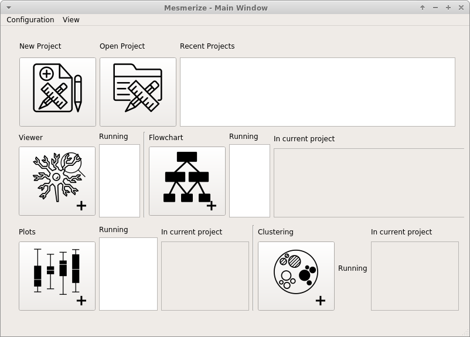
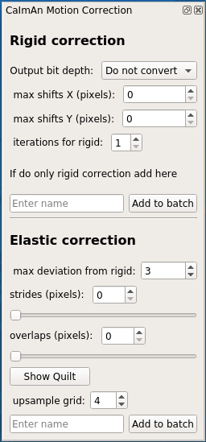
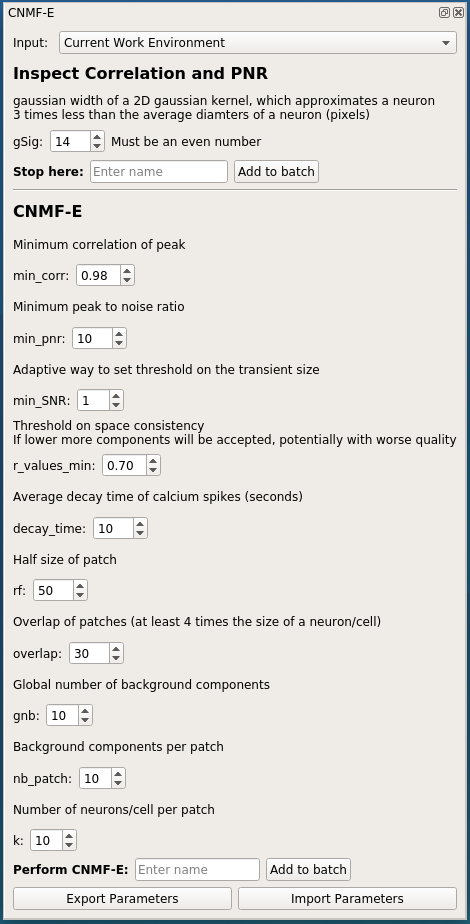
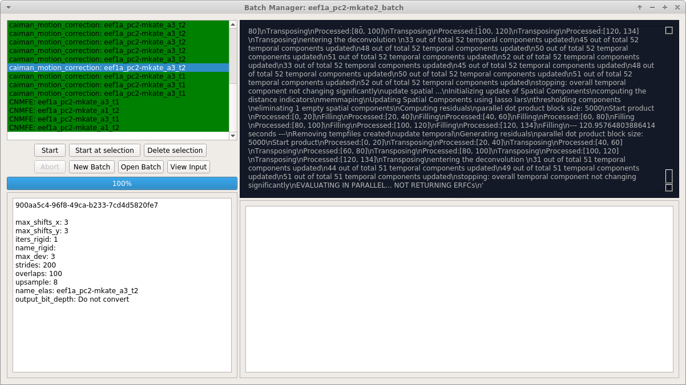
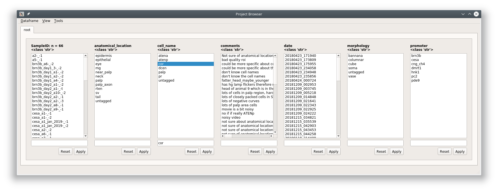

Overview¶
Mesmerize is a platform for the annotation and analysis of neuronal calcium imaging data. Mesmerize attempts to encompasses the entire process of calcium imaging analysis from raw data to semi-final publication figures that are interactive, and keep track of the analysis so that it can be recapitulated. It is applicable for a broad range of experiments and is intended to be used by users with and without a programming background.
Welcome Window¶
Share your analysis pipelines and figures along with your publication
The Viewer¶
Explore image sequences, and use various modules for pre-processing and signal-extraction. Annotate regions of interest with any relevant information. Map stimuli/behavior periods.

CaImAn modules¶
Mesmerize contains front-end GUI modules for the CaImAn library. This makes it very easy for users without a programming background to use the library.
CaImAn Elastic Motion Correction
CNMFE
Batch Manager¶
Computationally intense procedures performed can be organized with the Mesmerize Batch Manager.
Project Organization¶
Explore project data and create experimental groups.
Data analysis - pyqtgraph programmable flowcharts.¶
Build your own analysis piplines using flowcharts.

Interactive Plots¶
Create shareable interactive plots where the analysis history of every datapoint is traceable. Explore information associated with a datapoint, such as the spatial localization of its parent ROI and raw data.
Interactive Heatmaps

Interactive Cross-correlation analysis

Other types of plots: Beeswarm, Violins, KShape, Proportions, Scatter